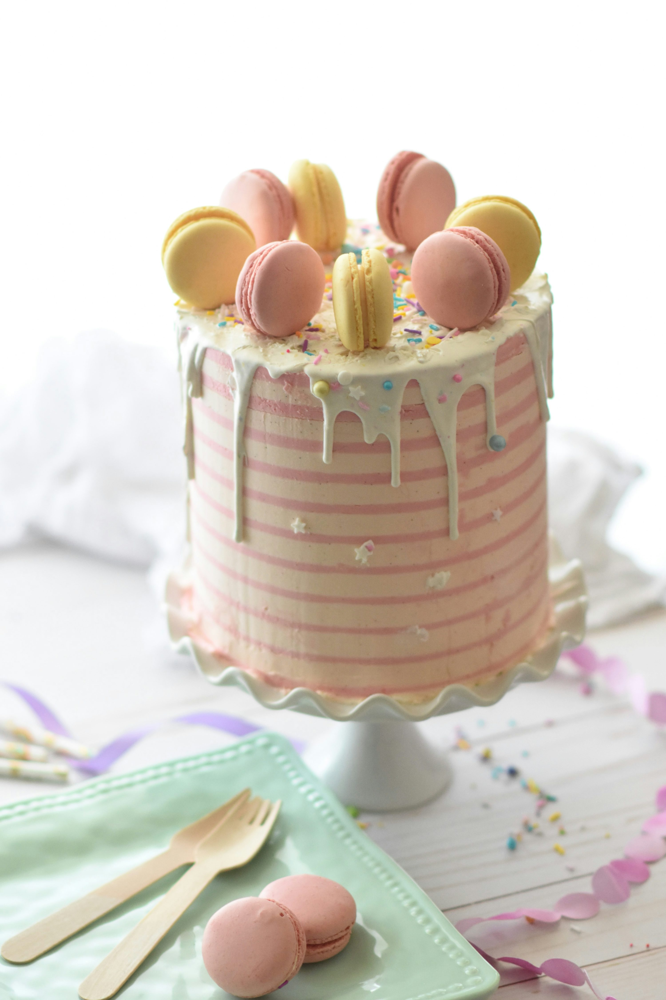
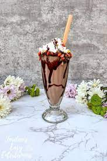
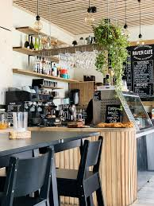
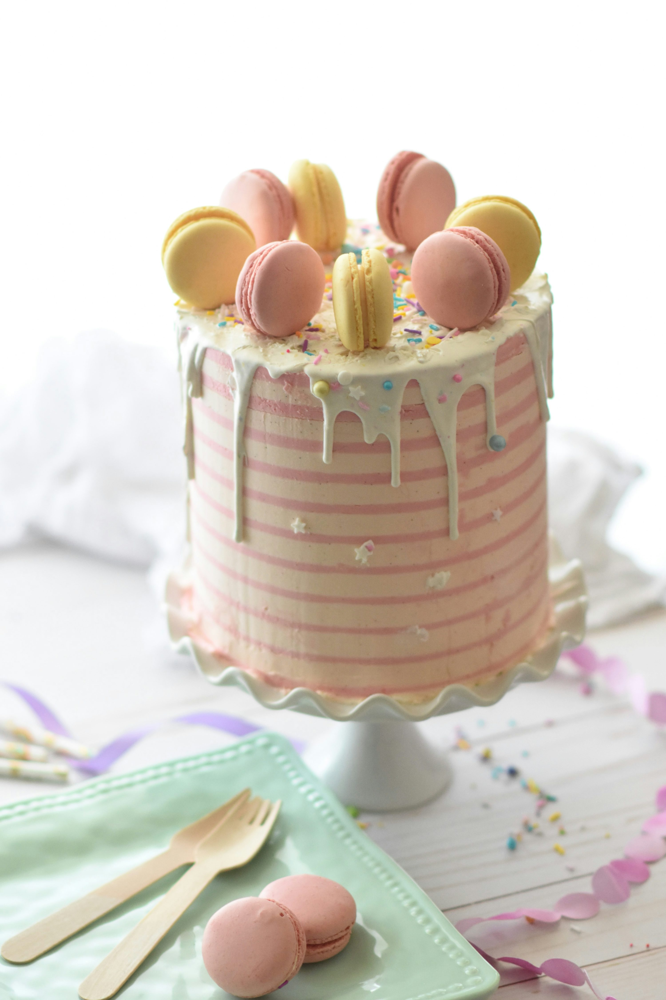
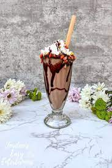
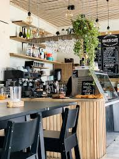
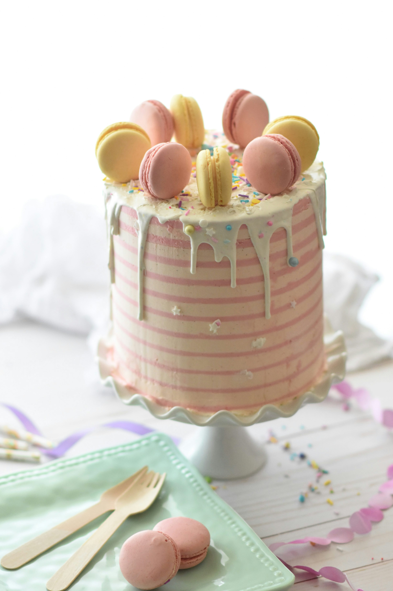
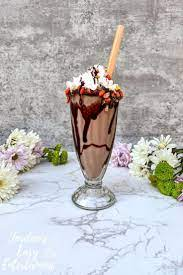
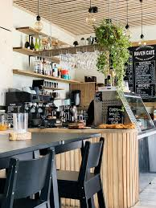
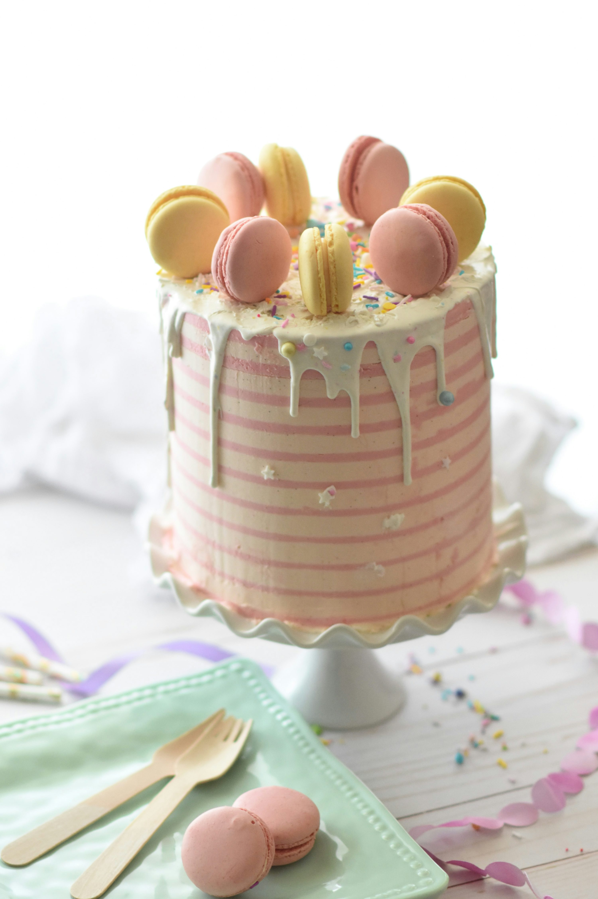
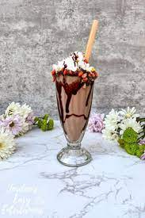
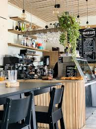
Welcome to Kookie's Cafe, where every cup tells a story and every bite brings comfort. Nestled in the heart of the city, our cozy little cafe is more than just a place to grab coffee - it's a space where friends meet, stories unfold, and sweet moments are made. Whether you're seeking quiet corner to unwind or a vibrant place to connect, we've created a warm and welcoming environment for all. From the rustic wooden decor to the soft background music, every detail is designed to make you feel at ease the moment you walk in We believe in keeping things simple yet special - from our handcrafted coffees, indulgent cakes to our refreshing shakes and comforting ambiance. Each recipe is made with love, using quality ingredients that make you feel right at home. We source our beans from trusted farms, bake our treats fresh everyday, and pour passion into every order. Our menu is thoughtfully curated to offer both classics and unique flavours, so there's always something new to explore with every visit.
Whether you're here for your morning brew, a mid-day treat, or an evening catch-up, we promise you warmth, smiles and a taste you'll come back for. Our friendly team is always to ready to serve you with care, ensuring your experience is just as delightful as our coffee, cakes and shakes. We're not just serving coffee - we're creating moment. Our menu is carefully crafted to reflect our commitment to quality and freshness. We bake our cookies, cakes, and pastries in-house daily, using time-tested recipes and locally sourced ingredients whenever possible. Our coffee is brewed from premium beans and prepared with care, offering everything from classic espresso drinks to seasonal specialties. Every item on our menu is made with love and served with a smile.
Behind every cup of coffee and every fresh-baked treat is a passionate team that truly cares. Our baristas, bakers, and front-of-house staff are the heartbeat of Kookie’s Café—bringing skill, creativity, and a personal touch to everything we serve. Many of our team members are long-time locals who love what they do and take pride in making your experience memorable. We believe that great service starts with genuine connection, and we’re always happy to share recommendations, swap stories, or just brighten your day with a smile. At Kookie’s, it’s the people—both staff and guests—who make this place feel like home. But what truly sets Kookie’s Café apart is the community we’ve built. We love getting to know our customers—hearing your stories, seeing familiar faces return, and being a small but meaningful part of your day. Whether it’s your first visit or your fiftieth, you’re not just a customer here—you’re part of the Kookie’s family.
As we continue to grow, our mission remains the same: to be a place where simple pleasures are celebrated, and every visit feels like a little escape from the everyday. Whether you’re here for your morning ritual, a sweet indulgence, or just a quiet moment to yourself, we’re honored to be part of your day. Thank you for making Kookie’s Café what it is—a warm, welcoming space built on community, creativity, and a deep love for good food. We can’t wait to welcome you in, again and again. So come in, take a seat, and enjoy something sweet. We’re glad you’re here.